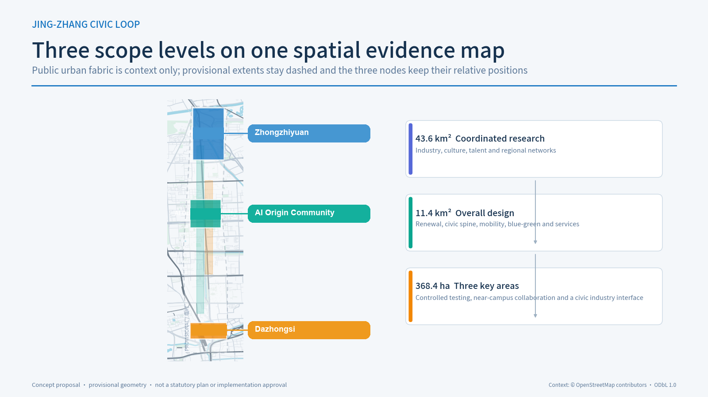
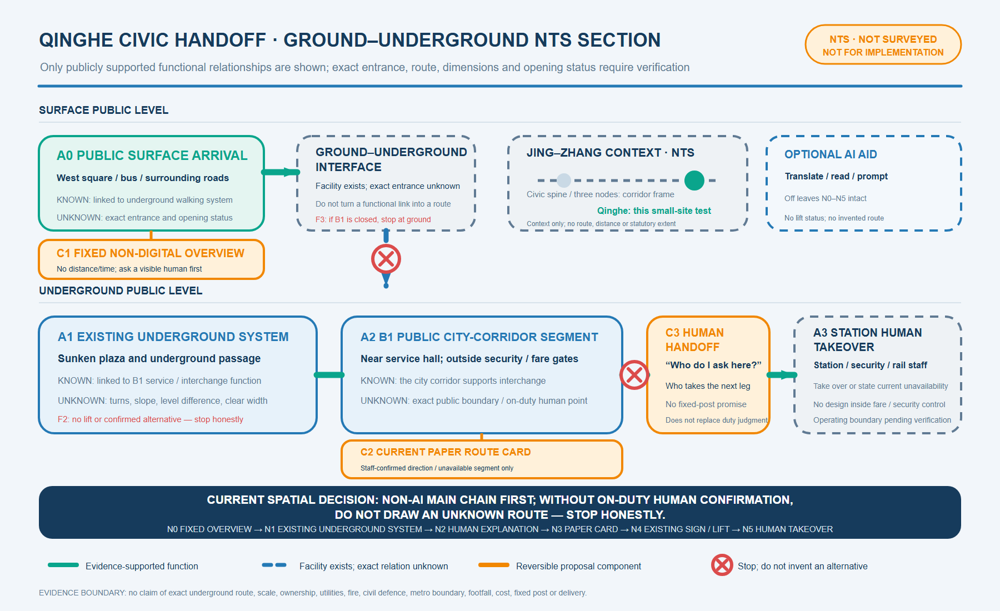
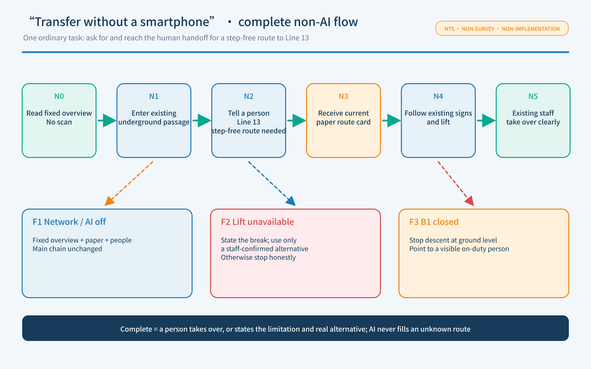
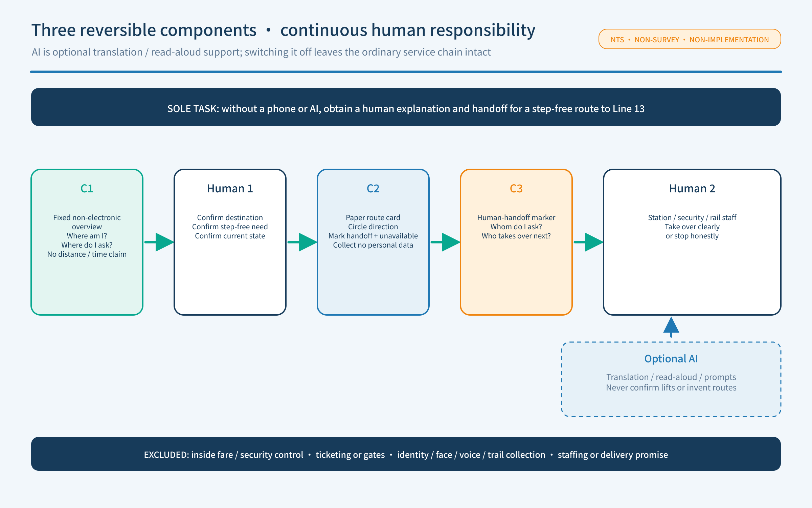
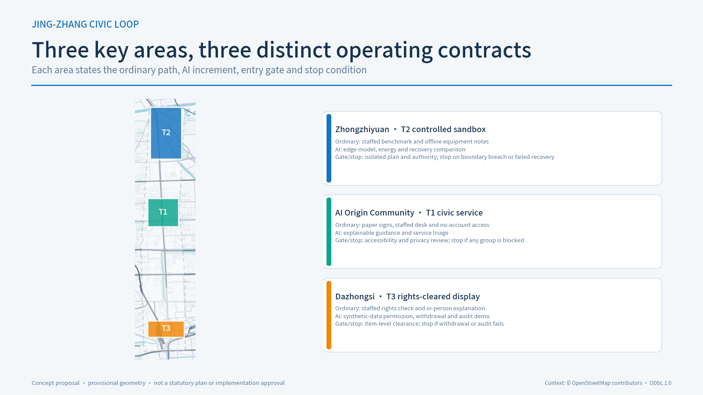
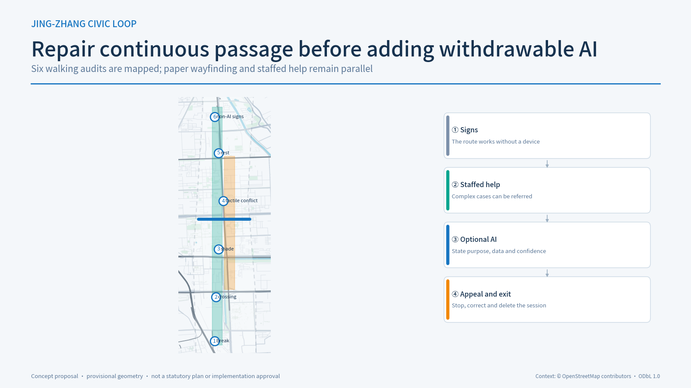

URBAN-DESIGN CONVERGENCE · BILINGUAL CONTRACT V1 · v0.1.7
Jing-Zhang Civic Loop

AI-GENERATED CONCEPT IMAGE · NOT A SITE PHOTO · NOT A BUILT OUTCOME
AI may exit; civic service may not
After comparing AI Origin Community, a Jing-Zhang Railway Heritage Park entrance and Qinghe Station, this iteration selects Qinghe's public interface outside fare/security control. Available public evidence can close one ordinary task—obtaining human guidance for a step-free Line 13 transfer without a smartphone—together with a complete non-AI path and an evidence-bounded surface–underground relationship. This is not an implementation siting decision.
Three evidence states
Verifiable fact
Only registered sources or recalculable package data.
Design response
Testable, stoppable, removable and handoff-ready concepts.
Pending
Official GIS, title, fire, accessibility, permits and accountable owners.
Three scopes and three nodes

Qinghe civic handoff: ground-underground NTS section
Supported
Public records confirm functional links among surface walking, underpasses, B1 services and transfers.
Still unknown
Exact entrance, segment route, dimensions, level change, opening state, public boundary and staffed point.
Design boundary
Only reversible information and human-handoff elements are proposed; nothing enters fare or security control.

Complete non-AI path
Ordinary chain
Fixed overview, existing underpass, tell a person, paper route card, existing signs and lift, existing staff takeover.
Explain failure
Network or AI outage leaves the chain intact. If a lift or B1 is unavailable, use only a current staff-confirmed alternative; otherwise stop honestly.
AI prohibitions
AI may not confirm lift status, fill an unknown route or make a smartphone or scan mandatory.

Three reversible components
C1 Fixed overview
Answers “Where am I?” and “Where do I ask first?” without unmeasured distance or time.
C2 Paper route card
A person marks the current direction, handoff and unavailable segment. No personal data is collected.
C3 Handoff marker
States whom to ask here and who takes over next.

Urban-design frame and this iteration's boundary
Jing-Zhang corridor
Remains the coordinated study and public-service frame; it is not an approved plan or implementation extent.
Dazhongsi and key areas
Remain conceptual key areas, no longer the small-site main line in this iteration.
AI Origin
Retained only as a historical source lead; exact location, title and current service interface remain independently unverified.

Bilingual identity sample and four distinct roles
Belt mark
Identifies the overall method. Original geometric sample; not a registered trademark, approved sign or existing railway mark.
Cultural wayfinding
Explains verified Jing-Zhang history, sources and limits only; heritage overlay and content clearance first.
Activity brand
Belongs to one confirmed event; organiser, site, data, brand and ordinary participation are gated each time.
Honours display
Belongs to one revocable record; issuer, subject, status, expiry, source and rights must all be present.
Fonts: system fallback (Arial / Noto Sans; Chinese sample falls back to Microsoft YaHei / PingFang / Noto Sans CJK SC). Graphic: original inline SVG. No third-party logo, photograph or railway image. Font embedding, name registration and asset rights still require review before application.
Belt-wide library: ordinary baseline before AI
B01 Civic service
Fixed overview, paper card and human handoff run independently. AI is switchable translation/read-aloud only. Remove it when the route or responsible role fails; retain ordinary service.
B02 Cultural wayfinding
Movable, low-impact and source-traceable. Open after heritage, rights and accessible-readability gates; remove on conflict or lost rights.
B03 Activity interface
Confirm organiser, authority, ordinary participation and quiet-day baseline per event. Remove temporary material afterwards; an annual concept authorises nothing.
B04 Honours display
No paid ranking, unverified logo or generated endorsement. Remove on failed source, expiry, withdrawal, objection or broken audit continuity.
Developer, scenario, international and follow-up interfaces
Inputs
Reproducible issue; ordinary task and non-AI chain; verified bilingual case; participant-initiated consented enquiry; party-confirmed regional evidence.
Outputs
Issue card/test protocol; P1/P2 scenario brief; bilingual evidence card; minimal human referral; de-branded reuse card.
Gates and feedback
Confirm receiver, rights, ordinary access, professional review, retention/withdrawal and feedback cycle per case. Otherwise remain P0 and imply no existing community, programme, partner or conversion result.
Full-stack ecosystem: capability–carrier–public return
Research / open source
Origin, Zhongzhiyuan and movable release points; paper issue cards first, reusable method as return. University, team, programme and IP remain unconfirmed.
Model / compute / recovery
Test only in a pending authorised isolated carrier; no device is presumed in public green space. No placement without compute, energy, network and responsibility.
Data / rights / audit
Dazhongsi uses item-cleared synthetic data and human rights explanation only; no display when source, licence, retention or withdrawal is unclear.
Talent / community service
Human enquiry, paper referral and no-account path first; no inference about population, posts, housing, volume or employment result.
Capital / professional service
Public directory and human consultation, never automated decision; no funding, fee, finance, patent or transfer promise.
Everyday / international
Xiaoyue wing and civic spine return bilingual evidence and failure; no existing programme, partner, frequency, footfall or stable resource is claimed.
Xiaoyue wing × ten cards: operation, not one physical placement
S01–S02 Release / test
Rights-cleared cards and failure reviews may enter the public interface. Zhongzhiyuan tests return status cards only; the sandbox does not move into green space.
S03–S04 Compute / Qinghe
No equipment without an authorised indoor node. Qinghe returns only the NTS rule “ordinary chain first; stop on unknown.”
S05–S06 Heritage / low carbon
Stories require rights; no environmental performance without measurement. The wing receives source cards and observation methods.
S07–S08 Transfer / data
Human referral and synthetic-data rights explanation only; no finance, patent, transfer or recruitment result.
S09 Community service
The direct Xiaoyue interface: paper/human completion first and no scan; stop AI if the ordinary route is blocked.
S10 Civic route
Links nodes and evidence cards confirmed one by one; no start without organiser, authority and node confirmation.
Reusable gate templates
R1 Responsibility
Body, scope, stop right, ordinary takeover, complaint/withdrawal, expiry and exit must be named. No current organisation is treated as accepting.
G1 Entry evidence
Boundary/title, ordinary path, accessibility and professional advice, content/brand/data rights, human handoff and restoration are all required.
M1 Post-authority measure
Define task, denominator, period, strata, failure and complaint records first. Without authority: no measurement, completion rate, delay or threshold.
L1 Long-term resource
Paper, human service, clearance, maintenance, funding, procurement/renewal, retirement and archive stay blank; no amount, staff or cost promise.
Spatial and validation principles
Spatial system
Retain first and retrofit reversibly. Continuous walking and blue-green civic space precede smart equipment; title, heritage, fire and statutory controls gate further design.
Validation boundary
This stage validates the evidence chain, non-AI path and failure branches only. It claims no user-test result, footfall gain, cost or delivery schedule.

Metrics, risk and submission status
Machine-readable evidence
sources.json · assumptions.json · risk.json · spatial.json · visual/assets/qinghe-service-interface.json · metrics.json · compliance_matrix.json
Validation boundary
Target: DETERMINISTIC · SPATIAL · VISUAL · PROFESSIONAL
Local checks are not official CI, professional approval or implementation authority.